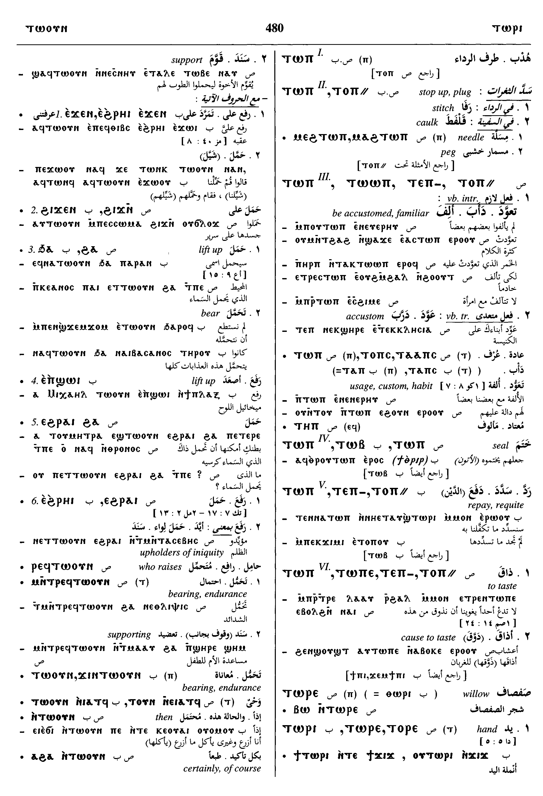
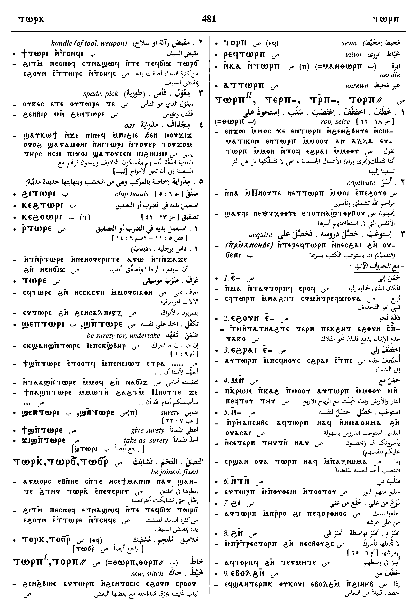
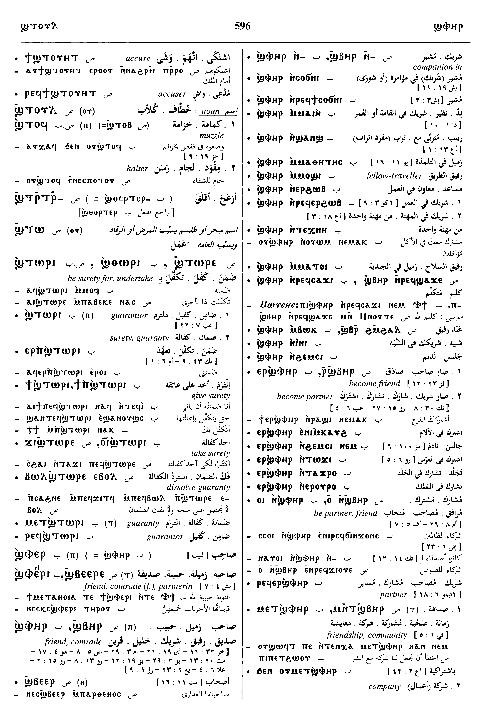
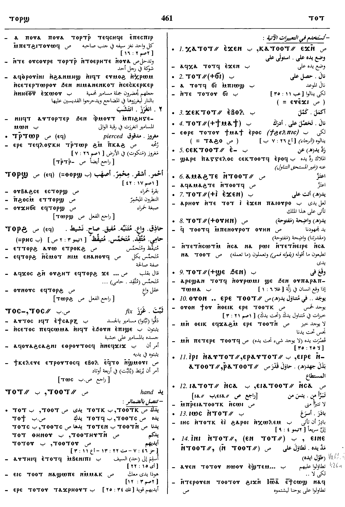
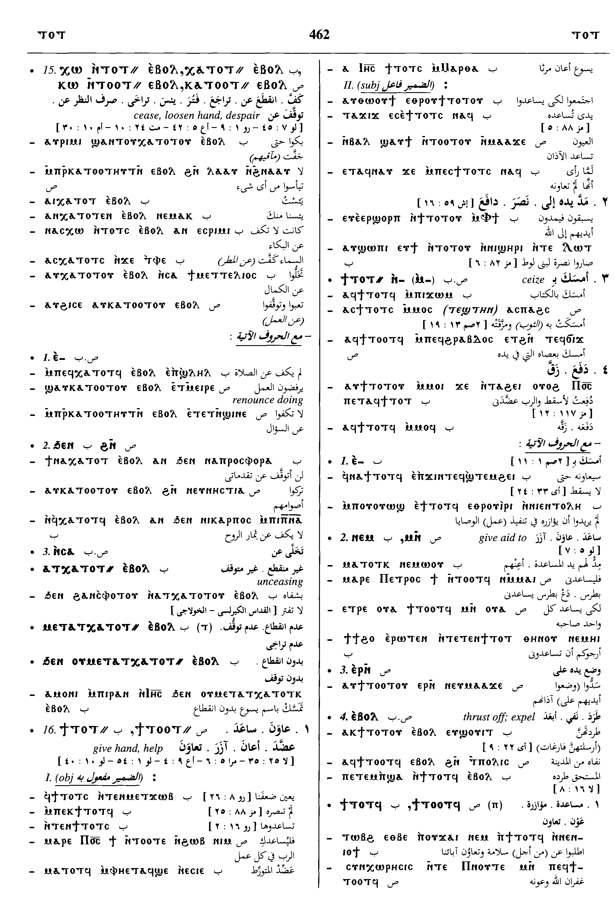
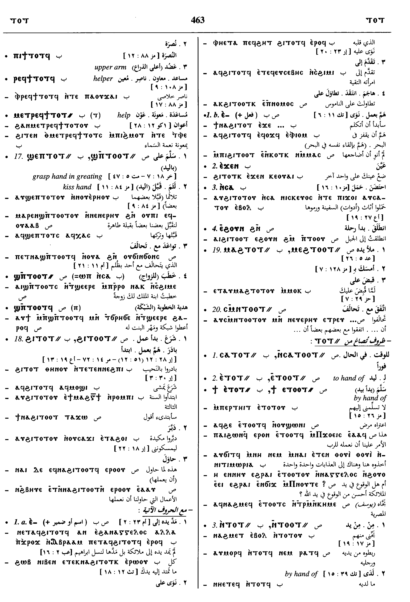

(noun female)
anatomy, tool
hand (B, rest only in derived meanings & compounds) [χειρος]
handle of tool, weapon [ξυλον]
spade, pick [σκαφειον]
oar
handle of tool, weapon [ξυλον]
spade, pick [σκαφειον]
oar
1: hand, 2: handle of tool, 3: handle of weapon, 4: spade, 5: pick, 6: oar
complete
| ⲣ ⲧ. SA | use hand, clap hands [ανακρουεσθαι]2314 | Crum: 425a | |||||||
| ϣ(ⲉ)ⲡ ⲧ. SAF
ϣⲡ ⲧⲱⲱⲣⲉ S [Mysteries of St. John and Holy Virgin; 1051; 4; 19; ⲁϥϣⲛϩⲧⲏϥ ϩⲁ ⲣⲟϥ ⲛϭⲓ ⲡϣⲏⲣⲉ ⲛ ⲧⲙⲛⲧⲁⲅⲁⲑⲱⲥ ϫⲉ ⲛⲧⲟϥ ⲡⲉ ⲛⲧⲁϥϣⲡ ⲧⲱⲱⲣⲉ ⲙⲙⲟϥ] [Mysteries of St. John and Holy Virgin; 1051; 4; 28; ⲃⲱⲕ ⲛⲅϯ ⲛⲁϥ ⲛ ⲧⲕⲥⲁⲣⲝ ⲛϥⲟⲩⲟⲙⲥ ϫⲉ ⲛⲧⲟⲕ ⲡⲉ ⲛⲧⲁⲕϣⲡ ⲧⲱⲱⲣⲉ ⲙⲙⲟϥ] [Instructions of Apa Pachomius; 1055; 2; 8; ⲧⲱⲃⲥ ⲙ ⲡⲉⲕⲣⲙ ⲛ ϯⲙⲉ ⲛⲧ ⲁⲕϣⲡⲧⲱⲱⲣⲉ ⲙⲙⲟϥ] |
(verb)intr: grasp hand, so be surety, undertake [εγγυαν]
tr: (oftener), be surety for as nn, surety [εγγυος, εγγυη]2315 |
||||||||
| ⲉⲣ ⲡϣ. B | be surety [εγγυαν]2316 | ||||||||
| ϣⲧⲱⲣⲉ (for ϣⲡ ⲧ.), ϣⲧⲱⲟⲣⲉ, ϣⲧⲟⲣⲉ, ϣⲧⲟⲣⲓ SBF
ϣⲑⲟⲣⲓ B ϣⲧⲟⲗⲓ F |
(verb)as ϣⲡ ⲧ., mostly tr [εγγυαν]2317 | Crum: 425b | |||||||
| ⲃⲱⲗ ϣ. ⲉⲃⲟⲗ S | dissolve guaranty2318 | ||||||||
| ⲙⲉⲧϣ. B | guaranty [εγγυη]2319 | ||||||||
| ⲣⲙϣ., ⲗⲉⲙϣ. SF | guarantor2320 | ||||||||
| ⲧⲟⲟⲧ-, ⲧⲉⲧ-, (ⲧⲉ-) S
ⲧⲟⲧ-, ⲧⲉⲛ- (with 2 pl suff & in preps ⲉⲧⲛ-, ⲛⲧⲛ- &c) B ⲧⲟⲟⲧ⸗ SALO ⲧⲟⲧ⸗ SALBO ⲧⲁⲁⲧ⸗, ⲧⲁⲧ⸗ F |
where = χειρ (lit or fig)2321 | ||||||||
| ⲉⲓⲣⲉ ⲛⲁⲧⲟⲟⲧ⸗, ⲣ ⲁⲧ. SA
ⲉⲓⲣⲉ ⲛⲁⲡⲁⲧ. S ⲣ ⲁⲡⲁⲧ. SAL ⲓⲣⲓ ⲛⲁⲩⲧⲟⲧ⸗, ⲉⲣ ⲁⲩⲧ. B ⲉⲗ ⲡⲁⲧⲁⲁⲧ⸗ F |
do to extent of hand('s capacity), endeavour [σπουδαζειν, σπευδειν]2322 | Crum: 426a | |||||||
| ⲉⲓⲱ ⲛⲧⲟⲟⲧ⸗, ⲉⲓⲁ ⲧ. | wash hands2323 | ||||||||
| ⲉⲓⲛⲉ ⲛⲧⲟⲟⲧ⸗, ⲉⲓⲛⲉ ⲛ ⲧ. | bring, place hand2324 | ||||||||
| ⲕⲱ ⲛⲧⲟⲟⲧ⸗ ⲉⲃⲟⲗ, ⲕⲁ ⲧⲟⲟⲧ⸗ ⲉⲃⲟⲗ SALBF | loosen hand, cease, despair [παυειν, εκλειπειν]2325 | ||||||||
| ϯ ⲛⲧⲟⲟⲧ⸗, ϯ ⲧⲟⲟⲧ⸗ SALBF | give hand, help [χειρα διδοναι, παρισταναι, συνεργειν]2326 | Crum: 426b | |||||||
| ϣ(ⲉ)ⲡ ⲧ. SALB | grasp hand
― in greeting ― in promising ― in betrothing as nn m S, betrothal gift2327 |
Crum: 427a | |||||||
| ⲛⲥⲁⲧⲟⲟⲧ⸗ SF
ⲥⲁⲧⲟⲧ⸗ B |
out of hand, forthwith [ευθυς, ευθεως, εξαυτης]2328 | ||||||||
| prepositions formed with ⲧⲉ-, ⲧⲟⲟⲧ⸗2329 | Crum: 427b | ||||||||
| ⲉⲧⲛ- S
ⲁⲧⲛ- AL ⲉⲧⲉⲛ- B ⲉⲧⲟⲟⲧ⸗ S ⲁⲧⲟⲟⲧ⸗ AL ⲉⲧⲟⲧ⸗ B ⲉⲧⲁ(ⲁ)ⲧ⸗ F (with 2 pl) ⲉⲧⲛⲧⲏⲩⲧⲛ, ⲉⲧⲉ(ⲧ)ⲧⲏⲩⲧⲛ, ⲉⲧⲟ(ⲟ)ⲧⲧⲏⲩⲧⲛ S ⲁⲧⲟⲟⲧⲛⲉ, ⲁⲧⲉⲧⲏⲛⲉ A ⲉⲧⲉⲛⲑⲏⲛⲟⲩ B |
(preposition)to hand of, to (but S often varies with ⲛⲧⲛ- from)2330 | ||||||||
| ⲛⲧⲛ- SAL
ⲧⲛ- A ⲛⲧⲉⲛ- BFO ⲛⲧⲉ- SB (other forms as ⲉⲧⲛ-, also) ⲛⲧⲟⲧⲏⲛⲟⲩ S ⲛⲧⲟⲟⲧ⸗ S ⲛⲧⲟⲧ⸗ B |
(preposition)in, by hand of, by, with, beside, from
stands for vb with, for through, because of from, away from to2331 |
||||||||
| ⲉⲃⲟⲗ ⲛⲧⲛ- SB | from2332 | Crum: 428b | |||||||
| ϩⲁⲧⲛ- SL
ϩⲁⲧⲉⲛ- F ϧⲁⲧⲉⲛ-, ϩⲁⲧⲉⲛ- (? error), (other forms as ⲉⲧⲛ-) B |
(preposition)lit under the hand of, so beside, with (form ϩⲁⲧⲛ- varies constantly with ϩⲁϩⲧⲛ-, but pronom forms are distinct)2333 | ||||||||
| ϩⲓⲧⲛ- SAL
ϩⲉⲧⲛ- S ϩⲓⲧⲉⲛ- BF ⲓⲧⲉ- F (other forms as ⲉⲧⲛ-, 2 pl S) ϩⲓⲧⲟⲟⲧⲧⲏⲩⲧⲛ-, ϩⲓⲧⲟⲧⲧⲏⲩⲧⲛ, ϩⲓⲧⲛⲧⲏⲩⲧⲛ, ϩⲓⲧⲉⲧⲏⲩⲧⲛ S ϩⲓⲧⲉⲧⲏⲛⲉ A ϩⲓⲧⲟⲟⲧⲧⲏⲛⲉ L ϩⲓⲧⲉⲛⲧⲏⲛⲟⲩ F ϩⲓⲧⲟⲟⲧ⸗ S ϩⲓⲧⲟⲧ⸗ B |
(preposition)lit by the hand of, so through, by, from
of time, during, after2334 |
||||||||
| ⲉⲃⲟⲗ ϩ. | meaning as ϩ.2335 | Crum: 429b | |||||||
See also:
Homonyms:
| view | ϭⲓϫ SALF ϫⲓϫ B ϫⲓϫϩ F plural: ϫⲉⲩϫ, ϫⲉⲟⲩϫ, ϫⲉⲟⲩϫϩ, ϫⲉⲟⲩϩϫ F | (noun female) hand [χειρ, δραξ]150 |
| view | ⲟⲩⲟⲥⲣ S ⲟⲩⲁⲥⲣ Sf ⲟⲩⲟⲥⲉⲣ, ⲃⲟⲥⲉⲣ B | (noun male) oar [κωπη]1743 |
| view | ϩⲓⲛⲉ SL ϩⲓⲛⲓ BF | (verb) intr: move by rowing [ελαυνειν]2216 |
Homonyms:
| view | ⲧⲱⲣⲉ S ⲑⲱⲣⲓ B | (noun) willow [ιτεα]368 |
Dawoud: 480b - 481a, 596a, 461a - 464a






